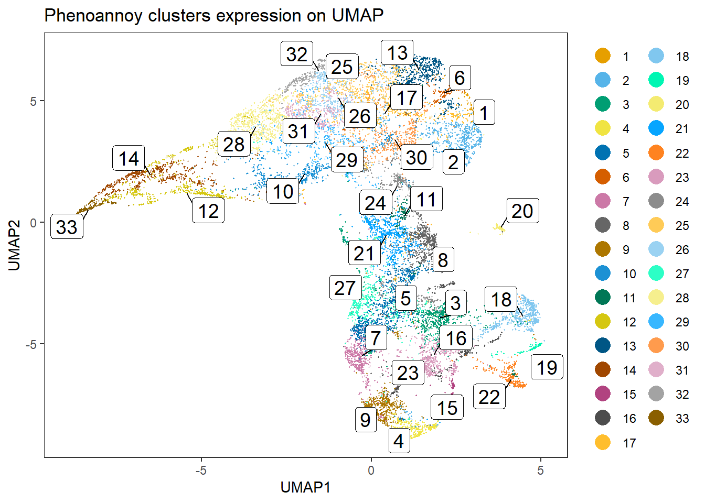
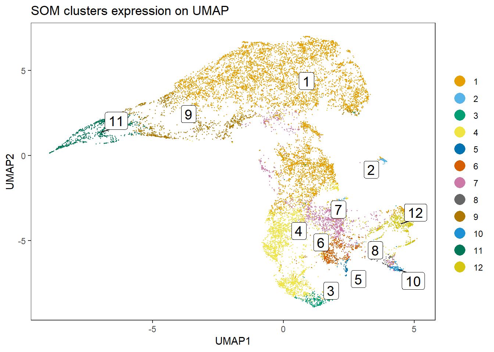

IMC data analysis workflow
Tess Brodie
University of Bern, DBMR, Visceral and Transplantation Surgery lab
Last updated: 2022-08-30
Checks: 6 1
Knit directory: 220707_workflowr/
This reproducible R Markdown analysis was created with workflowr (version 1.7.0). The Checks tab describes the reproducibility checks that were applied when the results were created. The Past versions tab lists the development history.
Great! Since the R Markdown file has been committed to the Git repository, you know the exact version of the code that produced these results.
Great job! The global environment was empty. Objects defined in the global environment can affect the analysis in your R Markdown file in unknown ways. For reproduciblity it’s best to always run the code in an empty environment.
The command set.seed(20220718) was run prior to running
the code in the R Markdown file. Setting a seed ensures that any results
that rely on randomness, e.g. subsampling or permutations, are
reproducible.
Great job! Recording the operating system, R version, and package versions is critical for reproducibility.
Nice! There were no cached chunks for this analysis, so you can be confident that you successfully produced the results during this run.
Using absolute paths to the files within your workflowr project makes it difficult for you and others to run your code on a different machine. Change the absolute path(s) below to the suggested relative path(s) to make your code more reproducible.
| absolute | relative |
|---|---|
| C:/Users/IMC Platform laptop/Users2/Tess/SteinbockCellSegmentation/220707/220707_workflowr | . |
Great! You are using Git for version control. Tracking code development and connecting the code version to the results is critical for reproducibility.
The results in this page were generated with repository version c445d7e. See the Past versions tab to see a history of the changes made to the R Markdown and HTML files.
Note that you need to be careful to ensure that all relevant files for
the analysis have been committed to Git prior to generating the results
(you can use wflow_publish or
wflow_git_commit). workflowr only checks the R Markdown
file, but you know if there are other scripts or data files that it
depends on. Below is the status of the Git repository when the results
were generated:
Ignored files:
Ignored: .Rhistory
Ignored: .Rproj.user/
Ignored: analysis/.Rhistory
Ignored: analysis/0_prep_data_cache/
Ignored: analysis/1_QC_mask_cache/
Ignored: analysis/2_batch_effect_correction_cache/
Ignored: analysis/4_cell_annotation_cache/
Ignored: analysis/5_sc_vis_cache/
Ignored: analysis/6_img_vis_cache/
Ignored: analysis/7_spatial_vis_cache/
Untracked files:
Untracked: Rplot.png
Untracked: UMAP_correctedvalues.pdf
Untracked: Umap_celltype_overlay.pdf
Untracked: allchannels_histogram.pdf
Untracked: allchannels_multidimplot.pdf
Untracked: alldata_lsecs.rds
Untracked: data/Joseentraining/
Untracked: data/Macro.ijm.ijm.ijm
Untracked: data/cellpose png masks/
Untracked: data/cluster_annotation.png
Untracked: data/cluster_annotation.xlsx
Untracked: data/fiji composite images/
Untracked: data/images.csv
Untracked: data/images.rds
Untracked: data/img/
Untracked: data/intensities/
Untracked: data/masks.rds
Untracked: data/masks/
Untracked: data/neighbors/
Untracked: data/panel.csv
Untracked: data/raw/
Untracked: data/regionprops/
Untracked: data/sample_metadata.xlsx
Untracked: data/spe.rds
Untracked: gated_cells/
Untracked: gated_cells2/
Untracked: marker_umap_corrected.png
Untracked: output/spe0.rds
Untracked: output/spe1.rds
Untracked: output/spe2.rds
Untracked: output/spe3.rds
Untracked: output/spe4.rds
Unstaged changes:
Deleted: analysis/about.Rmd
Deleted: analysis/license.Rmd
Note that any generated files, e.g. HTML, png, CSS, etc., are not included in this status report because it is ok for generated content to have uncommitted changes.
These are the previous versions of the repository in which changes were
made to the R Markdown (analysis/3_dim_red.Rmd) and HTML
(docs/3_dim_red.html) files. If you’ve configured a remote
Git repository (see ?wflow_git_remote), click on the
hyperlinks in the table below to view the files as they were in that
past version.
| File | Version | Author | Date | Message |
|---|---|---|---|---|
| html | 41ee8fb | tessbrodie | 2022-08-30 | Build site. |
| Rmd | db869f5 | tessbrodie | 2022-08-30 | Publish the initial files for myproject |
Dimensionality reduction and cell classification
Load packages
library(SpatialExperiment)
library(Rphenograph)
library(igraph)
library(dittoSeq)
library(viridis)
library(bluster)
library(BiocParallel)
library(ggplot2)
library(scran)
library(CATALYST)
library(kohonen)
library(ConsensusClusterPlus)
library(patchwork)
library(pheatmap)
library(gridExtra)
library(cytomapper)
library(Rphenoannoy)
library(SingleCellExperiment)
library(caret)
library(ggridges)Load data
spe <- readRDS(file.path("output", "spe2.rds"))
# Sample cells
cur_cells <- sample(seq_len(ncol(spe)), 2000)Dimensionality reduction: Rphenoannoy
mat <- t(assay(spe, "exprs"))
out <- Rphenoannoy(mat, k = 10)Run Rphenograph starts:
-Input data of 15521 rows and 23 columns
-k is set to 10 Finding nearest neighbors...DONE ~ 3.15 s
Compute jaccard coefficient between nearest-neighbor sets...Presorting knn...presorting DONE ~ 0.64 s
Start jaccard
DONE ~ 0.02 s
Build undirected graph from the weighted links...DONE ~ 0.07 s
Run louvain clustering on the graph ...DONE ~ 0.25 sRun Rphenograph DONE, totally takes 3.49s. Return a community class
-Modularity value: 0.874768
-Number of clusters: 33clusters <- factor(membership(out[[2]]))
spe$pg_clusters <- clusters
dittoDimPlot(spe, var = "pg_clusters",
reduction.use = "UMAP", size = 0.2,
do.label = TRUE) +
ggtitle("Phenoannoy clusters expression on UMAP")
Heatmap with phenoannoy clusters:
dittoHeatmap(spe[, cur_cells],
genes = rownames(spe),
assay = "exprs", scale = "none",
heatmap.colors = viridis(100),
annot.by = c("pg_clusters", "patient_id"),
annot.colors = c(dittoColors(1)[1:length(unique(spe$pg_clusters))],
metadata(spe)$color_vectors$patient_id))
Create a phenoannoy with FastMNN cell integration data
set.seed(322)
mat <- reducedDim(spe, "fastMNN")
out <- Rphenoannoy(mat, k = 10)Run Rphenograph starts:
-Input data of 15521 rows and 22 columns
-k is set to 10 Finding nearest neighbors...DONE ~ 3.23 s
Compute jaccard coefficient between nearest-neighbor sets...Presorting knn...presorting DONE ~ 0.65 s
Start jaccard
DONE ~ 0 s
Build undirected graph from the weighted links...DONE ~ 0.06 s
Run louvain clustering on the graph ...DONE ~ 0.18 sRun Rphenograph DONE, totally takes 3.47s. Return a community class
-Modularity value: 0.8722263
-Number of clusters: 34clusters <- factor(membership(out[[2]]))
spe$pg_clusters_corrected <- clusters
dittoDimPlot(spe, var = "pg_clusters_corrected",
reduction.use = "UMAP_mnnCorrected", size = 0.2,
do.label = TRUE) +
ggtitle("Phenoannoy clusters expression on UMAP, integrated cells")
Heatmap with FastMNN cell integrated phenoannoy
dittoHeatmap(spe[,cur_cells],
genes = rownames(spe),
assay = "exprs", scale = "none",
heatmap.colors = viridis(100),
annot.by = c("pg_clusters_corrected", "patient_id"),
annot.colors = c(dittoColors(1)[1:length(unique(spe$pg_clusters_corrected))],
metadata(spe)$color_vectors$patient_id))
Best value for average silhouette width is louvain rank cluster k=20
Phenograph with louvain community detection and rank-based weighting of edges (k=20)
clusters <- clusterCells(spe,
assay.type = "exprs",
BLUSPARAM = NNGraphParam(k = 20,
cluster.fun = "louvain",
type = "rank",
BPPARAM = bpparam()))
spe$nn_clusters <- clusters
dittoDimPlot(spe, var = "nn_clusters",
reduction.use = "UMAP", size = 0.2,
do.label = TRUE) +
ggtitle("SNN clusters expression on UMAP")
Heatmap louvain - rank - k=20
dittoHeatmap(spe[,cur_cells],
genes = rownames(spe),
assay = "exprs", scale = "none",
heatmap.colors = viridis(100),
annot.by = c("nn_clusters", "patient_id"),
annot.colors = c(dittoColors(1)[1:length(unique(spe$nn_clusters))],
metadata(spe)$color_vectors$patient_id))
Phenograph louvain with integrated cells
clusters <- clusterCells(spe,
use.dimred = "fastMNN",
BLUSPARAM = NNGraphParam(k = 20,
cluster.fun = "louvain",
type = "rank",
BPPARAM = bpparam()))
spe$nn_clusters_corrected <- clusters
dittoDimPlot(spe, var = "nn_clusters_corrected",
reduction.use = "UMAP_mnnCorrected", size = 0.2,
do.label = TRUE) +
ggtitle("SNN clusters expression on UMAP, integrated cells")
Heatmap louvain integrated phenograph
dittoHeatmap(spe[,cur_cells],
genes = rownames(spe),
assay = "exprs", scale = "none",
heatmap.colors = viridis(100),
annot.by = c("nn_clusters_corrected", "patient_id"),
annot.colors = c(dittoColors(1)[1:length(unique(spe$nn_clusters_corrected))],
metadata(spe)$color_vectors$patient_id))
flowSOM/Catalyst phenographs
# Run FlowSOM and ConsensusClusterPlus clustering
spe <- CATALYST::cluster(spe,
features = rownames(spe),
maxK = 30)o running FlowSOM clustering...o running ConsensusClusterPlus metaclustering...# Assess cluster stability
delta_area(spe)
Cell clusters with meta12
spe$som_clusters <- cluster_ids(spe, "meta12")
dittoDimPlot(spe, var = "som_clusters",
reduction.use = "UMAP", size = 0.2,
do.label = TRUE) +
ggtitle("SOM clusters expression on UMAP")
Heatmap
dittoHeatmap(spe[,cur_cells],
genes = rownames(spe),
assay = "exprs", scale = "none",
heatmap.colors = viridis(100),
annot.by = c("som_clusters", "patient_id"),
annot.colors = c(dittoColors(1)[1:length(unique(spe$som_clusters))],
metadata(spe)$color_vectors$patient_id))
Clustering with bluster package
# Select integrated cells
mat <- reducedDim(spe, "fastMNN")
# Perform SOM clustering
som.out <- clusterRows(mat, SomParam(100), full = TRUE)
# Cluster the 100 SOM codes into larger clusters
ccp <- ConsensusClusterPlus(t(som.out$objects$som$codes[[1]]),
maxK = 30,
reps = 100,
distance = "euclidean",
seed = 220410,
plot = NULL)end fractionclustered
clustered
clustered
clustered
clustered
clustered
clustered
clustered
clustered
clustered
clustered
clustered
clustered
clustered
clustered
clustered
clustered
clustered
clustered
clustered
clustered
clustered
clustered
clustered
clustered
clustered
clustered
clustered
clustered


CATALYST:::.plot_delta_area(ccp)
Link ConsensusClusterPlus clusters with SOM codes and save in object
som.cluster <- ccp[[16]][["consensusClass"]][som.out$clusters]
spe$som_clusters_corrected <- as.factor(som.cluster)
dittoDimPlot(spe, var = "som_clusters_corrected",
reduction.use = "UMAP_mnnCorrected", size = 0.2,
do.label = TRUE) +
ggtitle("Phenograph clusters expression on UMAP, integrated cells")
Heatmap with SOM
dittoHeatmap(spe[,cur_cells],
genes = rownames(spe),
assay = "exprs", scale = "none",
heatmap.colors = viridis(100),
annot.by = c("som_clusters_corrected", "patient_id"),
annot.colors = c(dittoColors(1)[1:length(unique(spe$som_clusters_corrected))],
metadata(spe)$color_vectors$patient_id))
Comparison between clustering approaches
tab1 <- table(paste("Rphenograph", spe$pg_clusters),
paste("SNN", spe$nn_clusters))
tab2 <- table(paste("Rphenograph", spe$pg_clusters),
paste("SOM", spe$som_clusters))
tab3 <- table(paste("SNN", spe$nn_clusters),
paste("SOM", spe$som_clusters))
ph1 <- pheatmap(log10(tab1 + 10), color = viridis(100))[[4]]
ph2 <- pheatmap(log10(tab2 + 10), color = viridis(100))[[4]]
ph3 <- pheatmap(log10(tab3 + 10), color = viridis(100))[[4]]
grid.arrange(ph1, ph2, ph3, nrow = 1, ncol = 3)
Comparison between clustering approaches: integrated cells
tab1 <- table(paste("Rphenograph", spe$pg_clusters_corrected),
paste("SNN", spe$nn_clusters_corrected))
tab2 <- table(paste("Rphenograph", spe$pg_clusters_corrected),
paste("SOM", spe$som_clusters_corrected))
tab3 <- table(paste("SNN", spe$nn_clusters_corrected),
paste("SOM", spe$som_clusters_corrected))
ph1 <- pheatmap(log10(tab1 + 10), color = viridis(100))[[4]]
ph2 <- pheatmap(log10(tab2 + 10), color = viridis(100))[[4]]
ph3 <- pheatmap(log10(tab3 + 10), color = viridis(100))[[4]]
grid.arrange(ph1, ph2, ph3, nrow = 1, ncol = 3)
Save data
saveRDS(spe, file.path("output", "spe3.rds"))
sessionInfo()R version 4.2.1 (2022-06-23 ucrt)
Platform: x86_64-w64-mingw32/x64 (64-bit)
Running under: Windows 10 x64 (build 19044)
Matrix products: default
locale:
[1] LC_COLLATE=English_Switzerland.utf8 LC_CTYPE=English_Switzerland.utf8
[3] LC_MONETARY=English_Switzerland.utf8 LC_NUMERIC=C
[5] LC_TIME=English_Switzerland.utf8
attached base packages:
[1] stats4 stats graphics grDevices utils datasets methods
[8] base
other attached packages:
[1] ggridges_0.5.3 caret_6.0-93
[3] lattice_0.20-45 Rphenoannoy_0.1.0
[5] Matrix_1.4-1 cytomapper_1.8.0
[7] EBImage_4.38.0 gridExtra_2.3
[9] pheatmap_1.0.12 patchwork_1.1.2
[11] ConsensusClusterPlus_1.60.0 kohonen_3.0.11
[13] CATALYST_1.20.1 scran_1.24.0
[15] scuttle_1.6.2 BiocParallel_1.30.3
[17] bluster_1.6.0 viridis_0.6.2
[19] viridisLite_0.4.0 dittoSeq_1.8.1
[21] Rphenograph_0.99.1 igraph_1.3.4
[23] ggplot2_3.3.6 SpatialExperiment_1.6.0
[25] SingleCellExperiment_1.18.0 SummarizedExperiment_1.26.1
[27] Biobase_2.56.0 GenomicRanges_1.48.0
[29] GenomeInfoDb_1.32.2 IRanges_2.30.0
[31] S4Vectors_0.34.0 BiocGenerics_0.42.0
[33] MatrixGenerics_1.8.1 matrixStats_0.62.0
[35] workflowr_1.7.0
loaded via a namespace (and not attached):
[1] scattermore_0.8 flowWorkspace_4.8.0
[3] ModelMetrics_1.2.2.2 R.methodsS3_1.8.2
[5] tidyr_1.2.0 knitr_1.39
[7] irlba_2.3.5 multcomp_1.4-20
[9] DelayedArray_0.22.0 R.utils_2.12.0
[11] rpart_4.1.16 data.table_1.14.2
[13] hardhat_1.2.0 RCurl_1.98-1.7
[15] doParallel_1.0.17 generics_0.1.3
[17] flowCore_2.8.0 snow_0.4-4
[19] ScaledMatrix_1.4.0 terra_1.5-34
[21] callr_3.7.2 cowplot_1.1.1
[23] TH.data_1.1-1 RANN_2.6.1
[25] future_1.27.0 ggpointdensity_0.1.0
[27] lubridate_1.8.0 xml2_1.3.3
[29] httpuv_1.6.5 assertthat_0.2.1
[31] gower_1.0.0 xfun_0.31
[33] jquerylib_0.1.4 evaluate_0.16
[35] promises_1.2.0.1 fansi_1.0.3
[37] htmlwidgets_1.5.4 Rgraphviz_2.40.0
[39] DBI_1.1.3 purrr_0.3.4
[41] ellipsis_0.3.2 dplyr_1.0.9
[43] ggcyto_1.24.1 ggnewscale_0.4.7
[45] ggpubr_0.4.0 backports_1.4.1
[47] cytolib_2.8.0 svgPanZoom_0.3.4
[49] RcppParallel_5.1.5 deldir_1.0-6
[51] sparseMatrixStats_1.8.0 vctrs_0.4.1
[53] abind_1.4-5 cachem_1.0.6
[55] withr_2.5.0 ggforce_0.3.3
[57] aws.signature_0.6.0 svglite_2.1.0
[59] cluster_2.1.3 crayon_1.5.1
[61] drc_3.0-1 labeling_0.4.2
[63] recipes_1.0.1 edgeR_3.38.1
[65] pkgconfig_2.0.3 tweenr_1.0.2
[67] nlme_3.1-158 vipor_0.4.5
[69] nnet_7.3-17 globals_0.16.0
[71] rlang_1.0.4 lifecycle_1.0.1
[73] sandwich_3.0-2 rsvd_1.0.5
[75] rprojroot_2.0.3 polyclip_1.10-0
[77] tiff_0.1-11 graph_1.74.0
[79] raster_3.5-21 carData_3.0-5
[81] Rhdf5lib_1.18.2 zoo_1.8-10
[83] beeswarm_0.4.0 base64enc_0.1-3
[85] whisker_0.4 GlobalOptions_0.1.2
[87] processx_3.7.0 png_0.1-7
[89] rjson_0.2.21 shinydashboard_0.7.2
[91] bitops_1.0-7 getPass_0.2-2
[93] R.oo_1.25.0 pROC_1.18.0
[95] rhdf5filters_1.8.0 DelayedMatrixStats_1.18.0
[97] shape_1.4.6 stringr_1.4.0
[99] parallelly_1.32.1 jpeg_0.1-9
[101] rstatix_0.7.0 ggsignif_0.6.3
[103] aws.s3_0.3.21 beachmat_2.12.0
[105] scales_1.2.1 magrittr_2.0.3
[107] plyr_1.8.7 hexbin_1.28.2
[109] zlibbioc_1.42.0 compiler_4.2.1
[111] dqrng_0.3.0 RColorBrewer_1.1-3
[113] plotrix_3.8-2 clue_0.3-61
[115] cli_3.3.0 XVector_0.36.0
[117] listenv_0.8.0 ncdfFlow_2.42.1
[119] ps_1.7.1 FlowSOM_2.4.0
[121] MASS_7.3-58 tidyselect_1.1.2
[123] stringi_1.7.8 RProtoBufLib_2.8.0
[125] highr_0.9 yaml_2.3.5
[127] BiocSingular_1.12.0 locfit_1.5-9.6
[129] latticeExtra_0.6-30 ggrepel_0.9.1
[131] grid_4.2.1 sass_0.4.2
[133] tools_4.2.1 future.apply_1.9.0
[135] parallel_4.2.1 CytoML_2.8.0
[137] circlize_0.4.15 rstudioapi_0.14
[139] foreach_1.5.2 git2r_0.30.1
[141] metapod_1.4.0 prodlim_2019.11.13
[143] farver_2.1.1 Rtsne_0.16
[145] DropletUtils_1.16.0 digest_0.6.29
[147] lava_1.6.10 shiny_1.7.2
[149] Rcpp_1.0.9 car_3.1-0
[151] broom_1.0.0 later_1.3.0
[153] httr_1.4.4 ComplexHeatmap_2.12.1
[155] colorspace_2.0-3 XML_3.99-0.10
[157] fs_1.5.2 splines_4.2.1
[159] RBGL_1.72.0 statmod_1.4.37
[161] scater_1.24.0 sp_1.5-0
[163] systemfonts_1.0.4 xtable_1.8-4
[165] jsonlite_1.8.0 timeDate_4021.104
[167] ipred_0.9-13 R6_2.5.1
[169] mime_0.12 pillar_1.8.1
[171] htmltools_0.5.3 nnls_1.4
[173] glue_1.6.2 fastmap_1.1.0
[175] fftwtools_0.9-11 BiocNeighbors_1.14.0
[177] class_7.3-20 codetools_0.2-18
[179] mvtnorm_1.1-3 utf8_1.2.2
[181] bslib_0.4.0 tibble_3.1.7
[183] curl_4.3.2 ggbeeswarm_0.6.0
[185] colorRamps_2.3.1 gtools_3.9.3
[187] magick_2.7.3 interp_1.1-3
[189] survival_3.3-1 limma_3.52.2
[191] rmarkdown_2.15 munsell_0.5.0
[193] GetoptLong_1.0.5 rhdf5_2.40.0
[195] GenomeInfoDbData_1.2.8 iterators_1.0.14
[197] HDF5Array_1.24.1 reshape2_1.4.4
[199] gtable_0.3.0